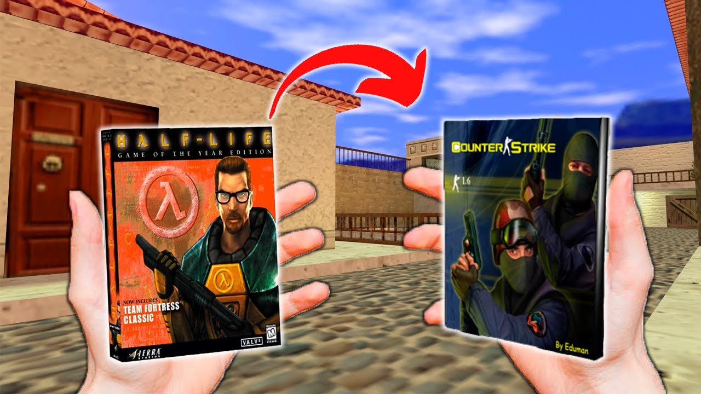

Origen y evolución
Counter-Strike 1.6 es un videojuego de disparos en primera persona multijugador (LAN o en línea) desarrollado por Valve para Microsoft Windows. Es una modificación completa del juego Half-Life, realizada por Minh Le y Jess Cliffe, quienes lanzaron, en beta pública, la primera versión el 19 de junio de 1999.
El 12 de abril del año 2000, Valve anunció que los desarrolladores de Counter-Strike y el propio equipo de Valve se habían unido, por lo que Counter-Strike estaría disponible para su compra. La versión definitiva de Counter-Strike' salió como «Versión 1.6» el 15 de septiembre de 2003.

Gameplay
Cada partida se divide en rondas cortas, con los equipos cambiando de bando a la mitad. Los terroristas intentan plantar la bomba o defender a los rehenes, mientras que los antiterroristas buscan evitar que se plante la bomba o rescatar a los rehenes. También se puede ganar logrando eliminando al equipo contrario, lo que añade una capa extra de estrategia a cada encuentro.
El sistema económico aumenta aún más la profundidad estratégica. Los jugadores ganan dinero según su rendimiento, que utilizan para comprar armas, armaduras y granadas. Una buena gestión de los recursos puede determinar el resultado de una partida, ya que los equipos deben decidir cuándo ahorrar y cuándo invertir en una compra completa. Este equilibrio entre riesgo y recompensa añade un nivel de complejidad que mantiene a los jugadores interesados ronda tras ronda.
Historia
Counter-Strike 1.6 no tiene una narrativa tradicional como otros juegos, pero su contexto se basa en el conflicto entre dos facciones: los terroristas y los antiterroristas. Cada bando tiene sus propios objetivos y misiones, que varían según el mapa en el que se juegue. Por ejemplo, en algunos mapas, los terroristas deben plantar una bomba en un sitio designado, mientras que los antiterroristas deben desactivarla o evitar que se plante.
Otros mapas presentan escenarios de rescate de rehenes, donde los antiterroristas deben liberar a los rehenes capturados por los terroristas. Aunque no hay una historia lineal, el trasfondo de estas misiones crea un ambiente tenso y emocionante que impulsa la acción del juego.